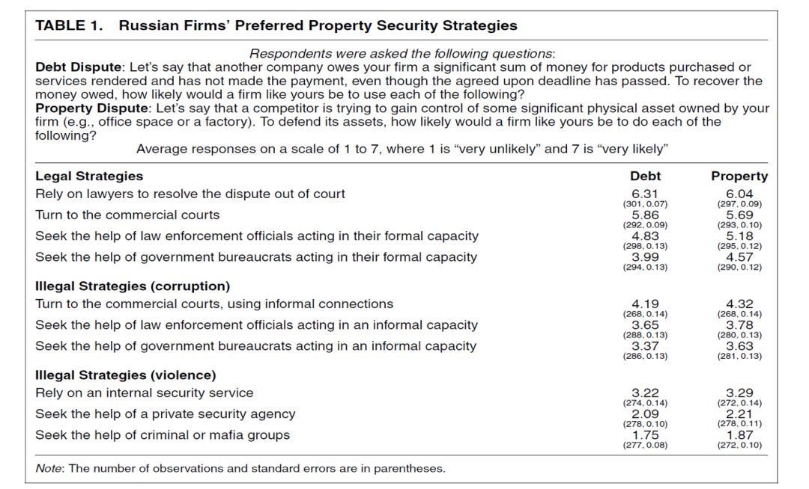
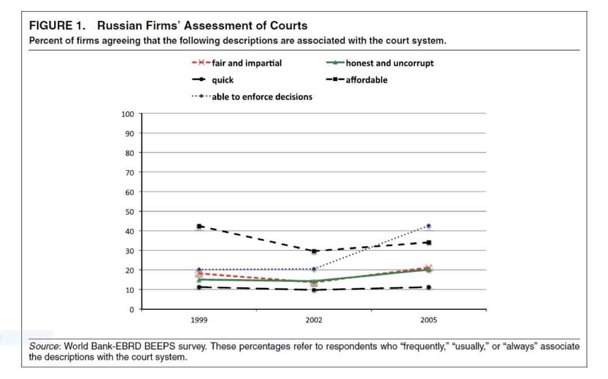
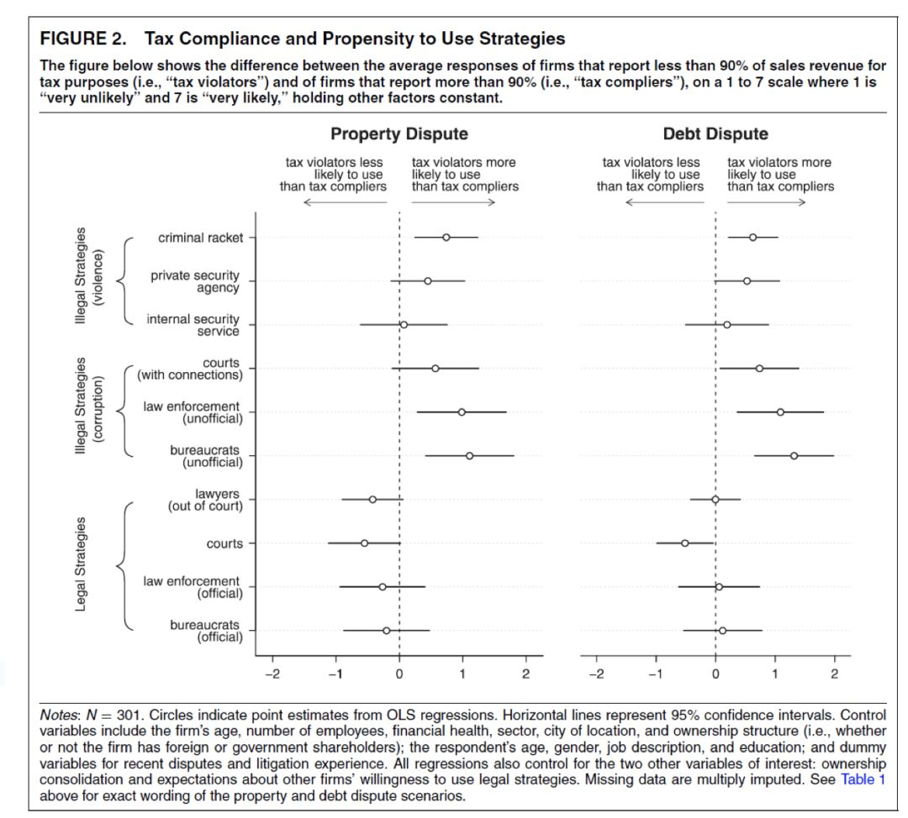
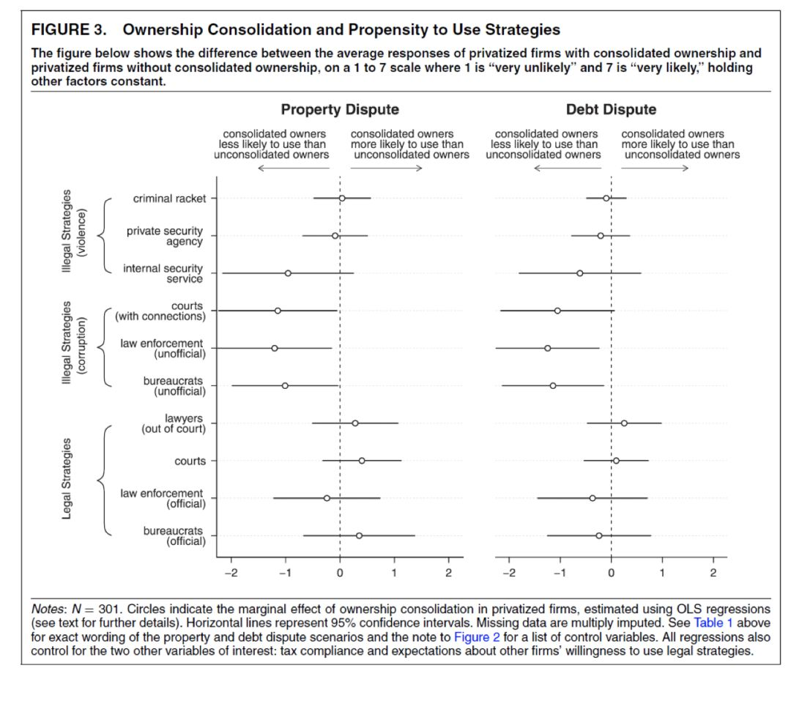
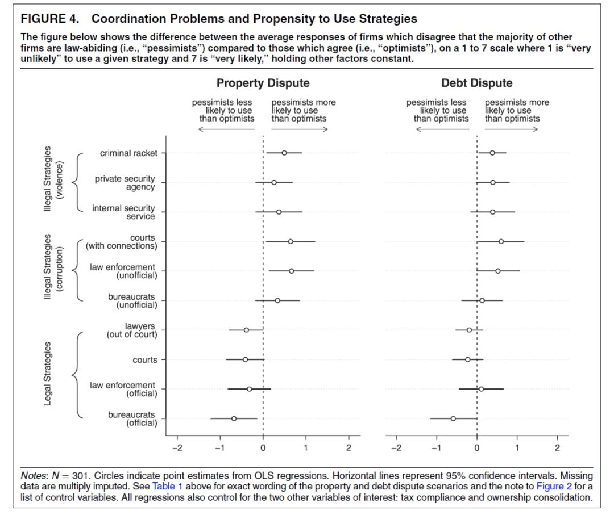

收录于合集
文章信息： Demand for Law and the Security of Property Rights: The Case of
Post-Soviet Russia（American Political Science Review (2017) 111, 2, 338–359）
作者简介： Jordan Gans- Morse，美国西北大学政治科学系助理教授，研究兴趣为财产权、法治、威权制度、非正式制度、掠夺式国家、腐败和庇护主义。
****一、背景与解释
制度对于经济发展的作用早已成为共识，国家供给或者保护好的制度，可以有效的实现经济发展。但如果国家失去（或缺乏）对好制度的供给能力，或者不能够有效的促使制度行之有效，甚至阻挠和侵蚀好制度的存在基础与社会环境，即便具备有利的比较优势和密集的政策输出，也难以保证高效的经济发展。
在真实世界中，好的制度一般表现为有效的制度，在有效的制度下，个体的逐利性行为具有总体上利他的效果，在无效或者低效的制度下，个体的逐利性行为往往会引致集体福利的损失。对于后发国家和转型国家而言，国家建构和经济发展往往同时进行，因此，国家建构的同时，必然伴随着“一套市场秩序的确立和巩固”。那么，国家主要依靠什么来建构并且有效维持建构后的市场秩序呢？法治是非常重要且主要的一个途径。对于市场而言，这里的法治对象是双向的，一方面构成了对市场竞争关系和竞争方式的约束和规范，另一方面也促使私人产权免于遭受包括国家在内的强制力量的随意侵蚀，但这里的问题是，如果国家能力较为羸弱，不仅缺乏供给一套好的制度的能力，而且缺乏训练有素、职业水平和职业伦理完善的官僚执法体系，国家所建构的市场法治体系很可能弱不禁风，这就会出现守法者求诉无门，违法者肆意妄为的局面，其均衡结果就是市场主体“普遍的”不再信任国家和法律，而选择依赖和依附于非正式的、影子性的乃至非常规的方式来保护自己。
以上观点便是制度供给说（North, Olson），这种观点认为，国家不能制定和巩固正式市场法治体系，会导致法治的权威一落千丈，进而滋生出混乱和不安的市场氛围，在这个氛围下，企业家（商人）或被迫或主动寻求形形色色的“法律”来保护自己的买卖和人身安全，这些“法律”往往包括黑社会、私人安保组织、保镖公司、地痞流氓乃至有头有脸的政界头首，他们所提供的帮助往往“包治百病、效果甚佳”，而寻求法律和规范的执法机关来保护自身权利将是最坏的选择。
二、质疑与研究设计
但是，Jordan观察了多个国家和地区的市场制度建构演化的过程，发现正式化的市场法治制度的有效与否，与企业是否充分依赖法律间不存在显著地、一致性的关系。比如，在东亚和东南亚地区的一些国家，即便国家能力较为强大，法治体系较为成熟，但企业并不排斥动用非正式的力量来辅助自身的经营活动——即便这些企业都是合法注册和审批、透明守法运营的企业。这类例子主要见于日本、韩国等国家；但对于近邻中国而言，正式的市场法治体系尚未完善，但企业往往不会明目张胆的以身试法、广泛动用非正式的力量来保护自己或者限制竞争对手，而总体上都遵守着一系列古已有之的商业伦理和买卖之道。除此之外，Jordan所列举的各个案例充分的反诘了既有观点——制度供给说的一般看法，他认为，国家供给了一揽子制度，不等于企业就会充分的信任和依赖，但对于一些国家，即便制度不甚完善，即便执法机关的公信力不是很高，企业也可能会更倾向通过正式化的方式，在权威规则内部解决自身的诉求。
基于逻辑与事实的错配，Jordan提出了一种相对于的解释——制度需求说，在Jordan看来，制度需求说充分的纳入了微观行动者的行为策略因素，而这一因素的纳入可以实现动态观测以及追踪比较的研究目标，从而可以解决宏观制度解释路径——即制度供给说所无法解决的难题，Jordan认为，制度供给说存在的不足表面上是解释力的局限，实质上是对制度演化过程观察与分解的粗糙和片面，从而遗漏和忽视了制度在微观世界中的具体流变过程和交互方式，而这些微观的行动者策略、态度以及偏好集合对于制度的真实效果（effectiveness）影响显著。
Jordan进一步凝练了所要探讨和检验的问题，即第一究竟什么因素会阻碍企业寻求正式的市场法治机制来保护自身的权利，第二，如果一个国家的市场法治状况并无显著变化，但出现企业从先前较少依赖正式法律制度，向广泛依赖和寻求正式法律制度的演化，这其中的关键因素和机制是什么？
接下来，就需要选择相应的案例和数据来分析这两个问题，Jordan选择苏联解体后至今的俄罗斯作为了研究对象来进行分析。其原因在于20多年来，俄罗斯的经济体制相继经历了私有化、市场化改革、98年金融危机、21世纪初能源和商品价格上涨、宽松货币周期、08年金融危机等一系列关键节点，而且，在叶利钦和普京时代，俄罗斯又系统的进行了一系列大规模国家建构、制度改革和纠偏除弊的政治“手术”，因此，从制度的供给来看，自然不必多说，俄罗斯已经下了大量功夫，从制度的需求来看，目前而言俄罗斯的市场环境相比90年代有了极大地改观（具体可以从商人遭到人身攻击的比率、因商业竞争导致的火并和伤害案件数量、产权和市场秩序法庭的庭审数量等等）。因此，两个方面的兼顾不仅可以用来研究各自一个方面，也可以整合和对比两个方面的相互作用关系。
另一方面，俄罗斯虽然开展了一系列制度供给和创新，但普遍认为，俄罗斯缺乏让制度体制行之有效的能力和绩效，因此，这个因素的存在在大大缓解基于变量内生、案例内生等内生性压力的同时，也有助于提升baseline机制权重测算的有效性。
Jordan关于计量模型的证成过程并不复杂，在此不多赘述，而针对计量模型如何搜集数据则是非常头疼的事情，Jordan一方面开展针对企业家的访谈和问卷调查搜集了大量的数据资料（主要集中于2010年左右，即苏联解体20年），另一方面也通过合理比对其他研究数据，来丰富和检验所搜集数据的可信性。
三、结论与反思
首先，Jordan询问了企业家，在遭遇债务和产权纠纷时，针对不同渠道的倾向度如何，结果显示，选择通过向执法机关举报、向司法部门提起诉讼的比例最多。而反观选择通过非正式乃至非法的渠道表达利益诉求的比例，相对较低。而选择在一定程度寻租的方式来解决自身诉求的比例居中。见下图。

图1
之后，Jordan结合历史数据，比较企业家对司法庭审制度的评价的历时变化，发现2005年相比1999年，基本没有较为显著的改观。见下图。

图2
这意味着，如果说近年来，越来越多的企业家选择采取正式的方式来解决自身的商业活动事务，那么制度供给无法构成一个激励因素，也可能不构成一个单一的影响因素。而据世界银行治理指数、世界银行关于各国商业环境的评估指数等数据，俄罗斯近十年的改观是极为有限的。因此，这说明制度供给说对于解释俄罗斯企业家选择偏好的变化是不充分的。
因此，可以推测，越来越多的企业家选择通过正式制度方式来解决自身诉求的趋势，或许只是一个策略博弈和权衡的结果而非制度引导下观念变迁的结果。那么，权衡的焦点是什么？权衡的成本与收益关系机制是什么？
Jordan进一步分析企业家的访谈材料，认为，有三个因素是左右企业家策略选择的关键，第一是形成正式制度偏好的背景阻碍、第二是采取正式机制的潜在收益、第三是对其他市场主体依法行为的预期和联动。对于第一点，一个明显的例子就是企业家如果存在偷税漏税的案底，那么这类企业家往往不太喜欢主动找衙门，因为可能会落得鸡飞蛋打的风险；对于第二点，明显的例子是交易成本和风险折现成本，即向官府告状所带来的制度成本和制度收益的平衡考虑；最后一点的例证便是企业的集体无意识现象，一个企业往往会按照行业主流的方式来安排自身的偏好，因此一旦当正式制度和非正式制度的均衡机制发生迁移，正式制度成为主角，那么所带来的效应是羊群式的搬家，因为没有一个企业想成为“另类”。
那么如何验证呢？Jordan构建了一系列回归模型来分别检验不同研究假设，最终发现，无论是自己的研究数据还是既有研究数据，都实现了较高的一致性。
首先来看图3，合法纳税企业相比抗税和偷漏税企业的正式制度偏好更高，联系俄罗斯近年来公民纳税遵从度的不断提升，说明公民的纳税意识逐渐形成，当然，着很大程度也来自于政府花钱办事的问责机制在透明化、可监督化。

图3
之后，再来看图4，可以发现，股权适度集中、企业股份关系多层次联结的企业相比股权凌散、股本弱小的企业，更倾向选择正式制度的方式来解决相关问题，因为前者选择正式制度的使用成本较低，选择非法和非正式制度的成本往往较高，相反，后者采取非法和非正式制度的成本相对更低，当然，这种成本也可能是一种短期性的、不考虑外部性的成本。

图4
最后，观察图5，可以发现，商业互信度较高的企业或者行业关系，谋求正式制度的偏好较高，相比而言，商业互信度较低的企业或者行业关系，谋求非正式乃至非法制度的偏好依旧高企不下。这说明企业的策略选择对集体性的市场环境极为敏感。

图5
对于以上研究发现，Jordan都在前期考察了相关内生性问题，比如当涉及到政治环境和法治环境评价时，企业家的偏好隐藏和社会预期偏好问题得到了Jordan妥善的解决；再比如，不同行业不同发展阶段的偏好和策略选择或许不同，因此样本分布存在异方差的可能，Jordan通过分类回归及多层线性回归的方式将这些问题局部化，降低模型内部结构带来的自相关阻尼。
总结Jordan的研究，针对国家如何形成法治化的市场秩序，Jordan一定程度回应和超越了制度供给说的不足和缺陷，但Jordan并未否认和贬低前者的重要作用，Jordan认为，国家对市场以及市场行为者的影响不仅可以通过制度供给的方式来进行，也可以通过非正式的制度来调适，因此国家也拥有策略性的一面。如何利用制度的方式，针对阻碍企业选择正式制度的障碍加以化解，或许是国家实现增长和制度供给有效性的关键。因此，一个“好”的制度的标准究竟是什么或许无从所知，但如果实现了激励机制的正向化，通过一个又一个好的人、好的公民的成熟、维护和自我约束，眼下的制度或许就是最好的。

原创不易，请支持我们的苹果手机用户长按二维码进行赞赏！
政观编辑部